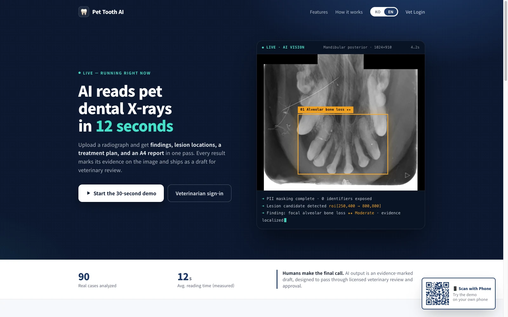
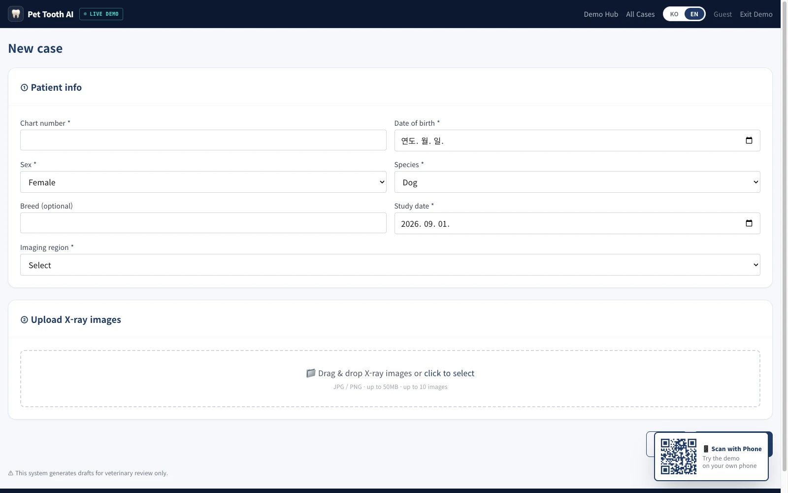
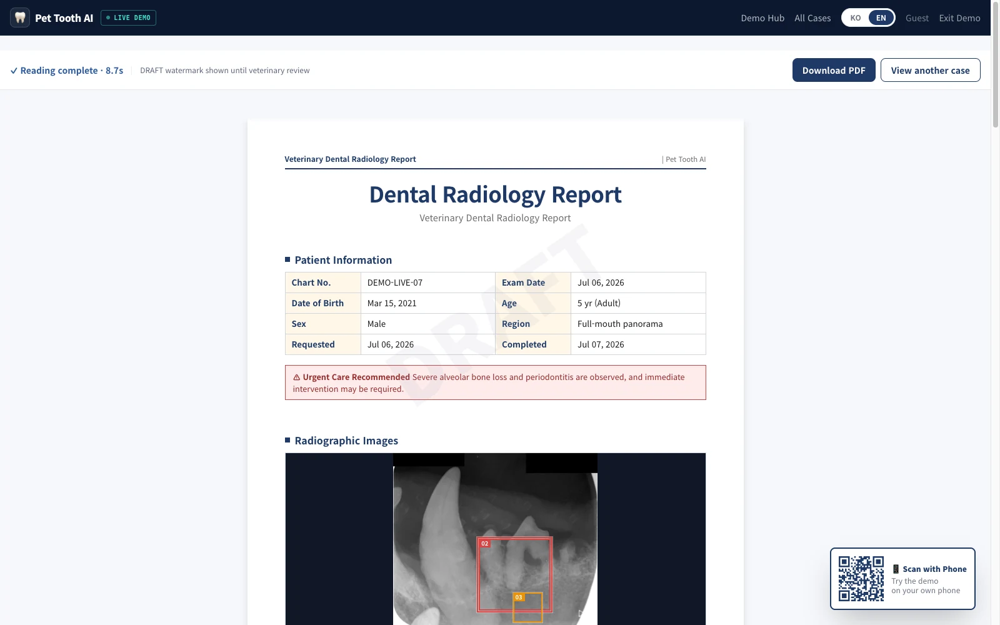
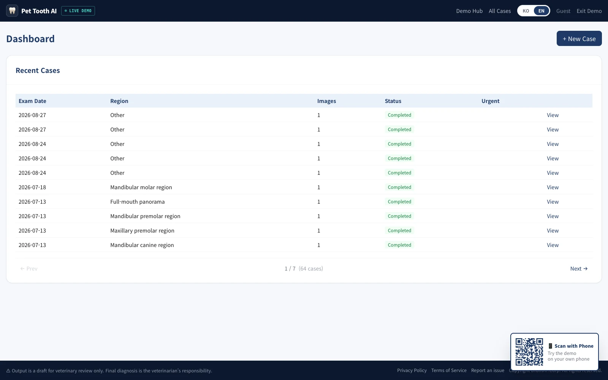
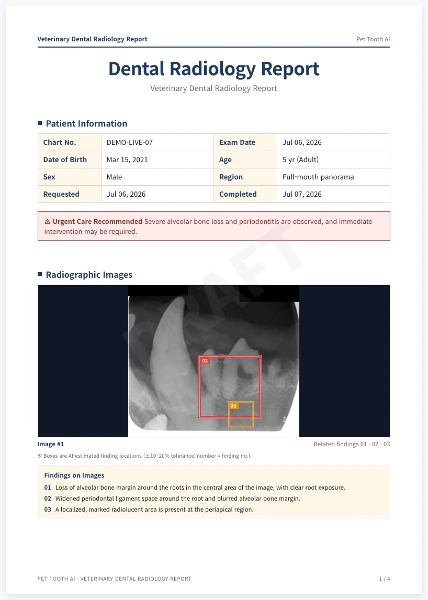
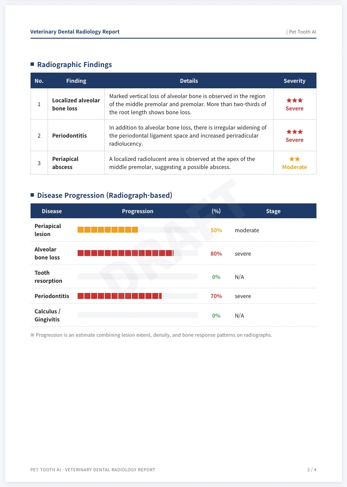
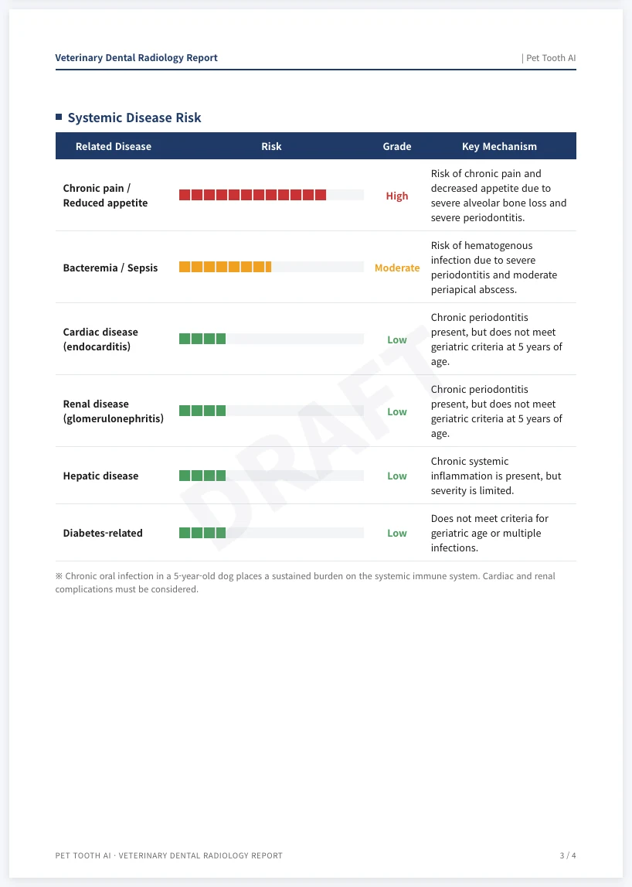
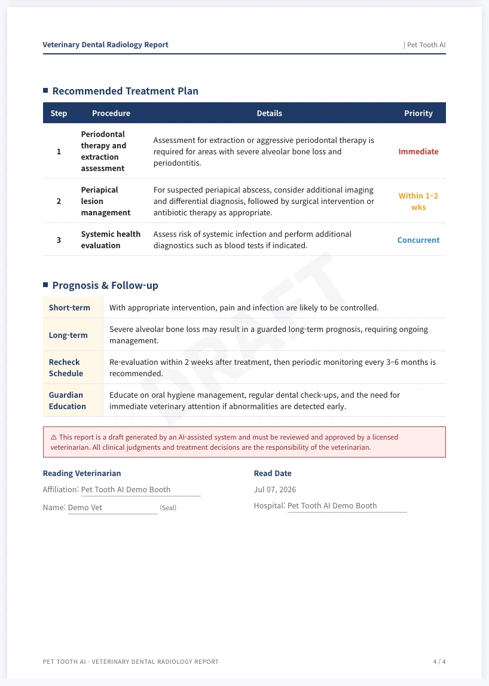
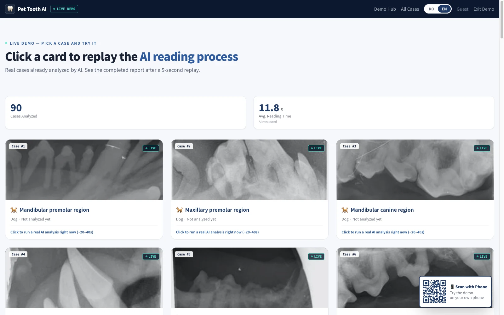

Upload a radiograph and get findings, lesion locations, a treatment plan and an A4 report in one pass. Every result marks its evidence on the image and ships as a draft for veterinary review.

Operated by DIGIRAY Corp. · Free across all features during the beta
Why it matters
Dental disease in companion animals rarely shows on the outside, so radiographic reading is essential — but reading each image carefully and then writing up something an owner can understand takes real time in a working clinic.
| Before | Pet Tooth AI |
|---|---|
| Veterinarian reads the image by eye after imaging | AI drafts the read on upload — 12 seconds on average, measured |
| Findings noted verbally or by hand | Structured findings on a standard vocabulary, with lesion locations marked |
| Owner consultation material written separately | A4 report and PDF generated in the clinic's own format (KO / EN) |
| — | Veterinarian reviews, edits and approves the draft → final report |
A person makes the final call.
AI output is an evidence-marked draft, designed to pass through review and approval by a licensed veterinarian. Reports carry a DRAFT watermark until they are reviewed. This system is not a medical device.
How it works
Push automatically from the imaging software in the exam room via the integration API, or upload the X-ray on the web. Patient details — species, age, sex, region imaged — feed into the read.

The image runs a five-stage pipeline: preprocessing → automatic masking of patient identifiers by OCR → vision-AI reading on an eight-step clinical prompt → schema validation and confidence gating → A4 PDF typesetting. Progress shows in real time.

The veterinarian reviews the finished draft on screen, edits what needs changing and approves it into a final report. Every edit is retained for audit.

The output
Each page carries the clinic header and a page number, and downloads as a PDF in one click. Below is a real AI-read case — severe, flagged urgent.




Capabilities
Every finding points to a region on the X-ray. The location is stated as an AI estimate, by design, so a veterinarian can verify it.
Upload to finished draft in about 12 seconds, measured — fast enough not to break the flow of an appointment.
The same study is read twice independently and the server compares. Only findings that agree are marked verified; anything appearing on one side alone is down-weighted, holding back over-reporting.
Chart numbers and dates burned into the image are found by OCR and covered before analysis, so identifiers never reach the analysis server.
Single-sheet typesetting in the clinic's format, per-page headers, one-click PDF — for owner consultations and the chart.
The same case in either language — usable as-is for owners who do not read Korean, and for showing the work abroad.
A push integration (API-key authenticated) sends the image the moment imaging finishes, sitting on top of the existing workflow. Originals received this way are deleted right after analysis.
When a high-confidence severe finding is detected, an urgent-care banner is placed at the top of the report.
Live demo
Replay real AI-read cases straight in the browser, from mild to urgent. Click a case that has not been analysed yet and a real analysis runs right then.
Open the demo ↗
The veterinarian decides. AI output is a draft for review; the DRAFT watermark stays until it is edited and approved. Final diagnosis and treatment rest with a licensed veterinarian.
Privacy. Patient identifiers in the image are masked automatically before analysis, and only clinical variables — species, age, sex, region — are passed to the AI. Originals received through the integration are deleted as soon as analysis completes.
Not a medical device. This is a software tool that produces reference material to support a diagnosis.
Each read settles as $0.1 of $SL credit — the first real "daily reads = daily demand" signal for the protocol. Fiat billing is available, so no crypto handling is required.